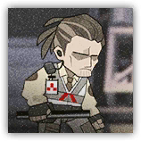

莱茵生命防卫科成员 Rhine Defense Member
近战 物理；普通 任意
|  |
莱茵生命的警卫人员。配备莱茵生命为其提供的防暴装置，经过特级防暴作战训练，护卫能力大大增强。 |
莱茵生命防卫科成员丨Rhine Defense Member
中型类人（任意），守序中立
| AC 15 | 先攻 +5（15） |
| HP 45（6d8+18） | |
| 速度 30 尺 | |
| 调整 | 豁免 | 调整 | 豁免 | 调整 | 豁免 | |||||||||
|---|---|---|---|---|---|---|---|---|---|---|---|---|---|---|
| 力量 | 17 | +3 | +3 | 敏捷 | 16 | +3 | +3 | 体质 | 16 | +3 | +5 | |||
| 智力 | 13 | +1 | +1 | 感知 | 12 | +1 | +1 | 魅力 | 11 | +0 | +0 |
| 技能 调查+3，察觉+3 |
| 装备 短棍，软质护具 |
| 感官 黑暗视觉60尺，被动察觉13 |
| 语言 通用语，哥伦比亚语 |
| CR 1（XP 200；PB +2） |
动作 Actions
多重攻击 Multiattack。莱茵生命防卫科成员发动两次短棍攻击。
短棍 Club。近战攻击检定：+5，触及5尺。命中：8（2d4+3）钝击伤害。
莱茵生命防卫科高级成员 Rhine Defense Senior Member
近战 物理；普通 任意
|
莱茵生命的警卫人员。配备莱茵生命为其提供的防暴装置，经过特级防暴作战训练，护卫能力大大增强。 |
莱茵生命防卫科高级成员丨Rhine Defense Senior Member
中型类人（任意），守序中立
| AC 16 | 先攻 +6（16） |
| HP 67（9d8+27） | |
| 速度 30 尺 | |
| 调整 | 豁免 | 调整 | 豁免 | 调整 | 豁免 | |||||||||
|---|---|---|---|---|---|---|---|---|---|---|---|---|---|---|
| 力量 | 18 | +4 | +4 | 敏捷 | 18 | +4 | +4 | 体质 | 16 | +3 | +5 | |||
| 智力 | 14 | +2 | +2 | 感知 | 14 | +2 | +2 | 魅力 | 12 | +1 | +1 |
| 技能 调查+4，察觉+4 |
| 装备 短棍，软质护具 |
| 感官 黑暗视觉60尺，被动察觉14 |
| 语言 通用语，哥伦比亚语 |
| CR 2（XP 450；PB +2） |
动作 Actions
多重攻击 Multiattack。莱茵生命防卫科高级成员发动两次短棍攻击。
短棍 Club。近战攻击检定：+6，触及5尺。命中：9（2d4+4）钝击伤害。